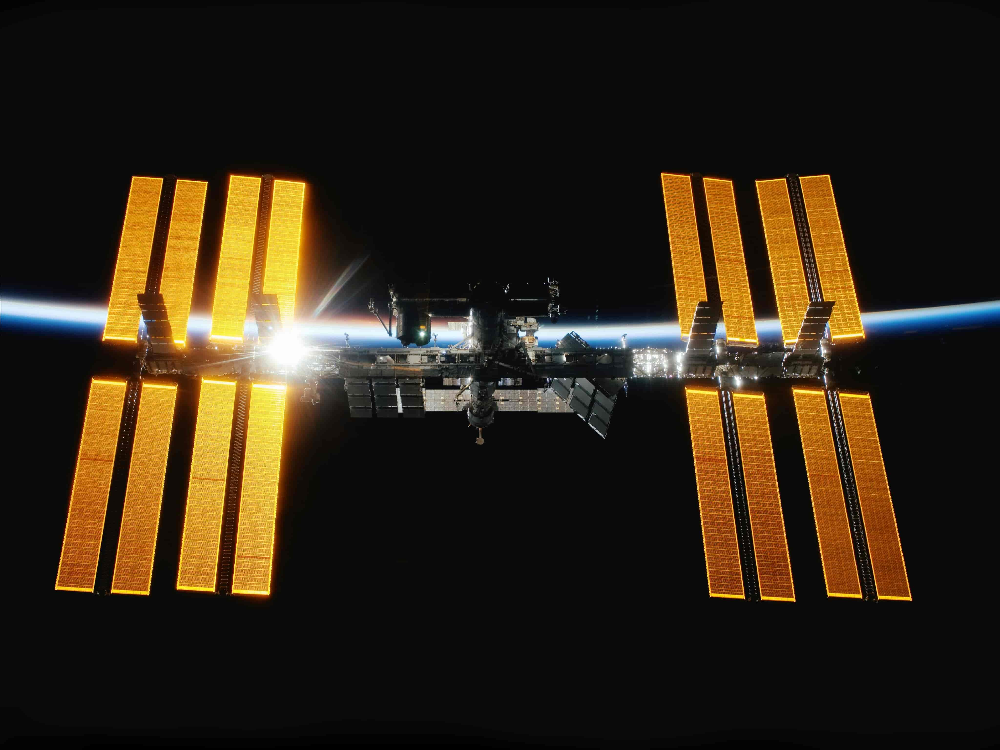

The Legacy Continues
Explore Newton’s Legacy in Modern Science
Isaac Newton's intellectual curiosity and his thirst for knowledge paved the way for centuries of discovery. Today, his spirit lives on in the work of scientists, mathematicians, and thinkers who challenge the very fabric of the cosmos. Be part of this ongoing journey.

How his theories continue to guide our understanding of the universe today. Learn more.
Quotes
If I have seen further, it is by standing on the shoulders of giants.
To myself, I seem to have been only like a boy playing on the seashore, while the great ocean of truth lay undiscovered before me.